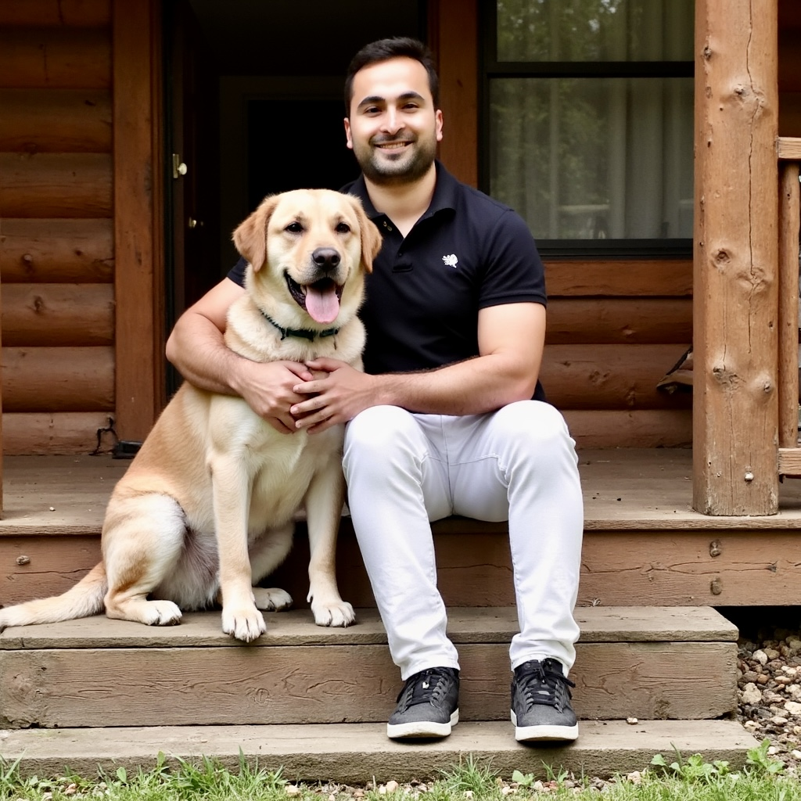

About Me
I’m Rizwan Jivani, a Software Development student with a background in science, healthcare, and technology.
Through my studies in biology, chemistry, physiology, and biophysics, I've developed a strong foundation in critical thinking, problem-solving, and scientific inquiry. These experiences have given me a broader perspective on how technology can make a meaningful impact in people's lives.
Today, I am focused on expanding my skills in software development through coursework and hands-on projects. As I continue my studies, I am gaining experience with web development, programming, databases, cloud technologies, and the tools commonly used in modern IT environments.
My long-term goal is to build a career at the intersection of healthcare and technology. I am interested in using technology to improve systems, streamline processes, and create solutions that make information more accessible for both organizations and the people they serve.
Outside of academics, I value continuous learning, personal growth, and taking on new challenges. I believe that meaningful progress comes from curiosity, persistence, and a willingness to keep improving, both professionally and personally.